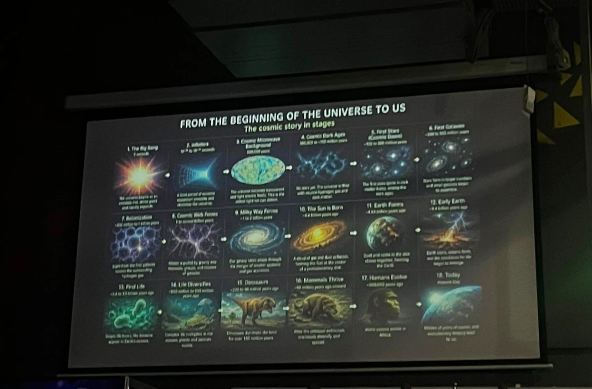

ABOUT / THE PEOPLE
Science, with a human voice.
50 Shades of Science is an independent science communication project founded by Supriyo Saha.
FOUNDER
Supriyo Saha
Supriyo is a PhD researcher in cosmology at the Tata Institute of Fundamental Research (TIFR), Mumbai. He brings a researcher's curiosity and a communicator's instinct to science stories for a wider audience.
Through 50 Shades of Science, he creates explainers and live experiences spanning physics, biology, AI, and the broader process of discovery.
50 Shades of Science is an independent project. Institutional affiliation identifies the founder's research position and does not imply TIFR endorsement.
Explore his researchWHY THIS EXISTS
Understanding should feel possible.
A good explanation respects both the science and the audience. We aim to make difficult ideas accessible without pretending every question has a simple answer.

